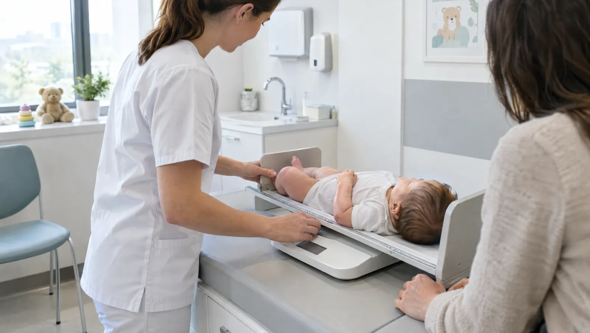

Sağlam çocuk izlemi ve hastalık dönemleri
Çocuk sağlığı ve hastalıkları bölümü, bebeğinizi doğumdan ergenliğin sonuna kadar izler. Bu izlem yalnız hastalık dönemleriyle sınırlı değildir. Sağlam çocuk kontrollerinde hekiminiz boy, kilo ve baş çevresini ölçer, gelişim basamaklarını değerlendirir ve aşı takvimini gözden geçirir. Çocuğunuz hastalandığında onu tanıyan bir hekimin karşısına çıkması da işi kolaylaştırır.
Kontroller ilk yıl sıktır ve çoğu zaman aşı zamanlarıyla aynı döneme denk gelir. Bu ziyaretlerde beslenme, uyku, emzirme ve D vitamini kullanımı gibi konuları sorularınızla birlikte konuşuruz. Okul çağında yılda bir kontrol çoğu çocuk için yeterlidir. Hekiminiz bu kontrollerde görme, işitme ve tansiyon taramasını da yapar.
Kreşe ya da okula başlamak, enfeksiyonların sıklaştığı bir dönemi de beraberinde getirir. Bir yılda birkaç kez nezle, ishal ya da boğaz enfeksiyonu geçirmek çoğu çocuk için olağandır. Ateş çıktığında derecesinden çok çocuğunuzun genel durumuna bakın: oyun oynuyor mu, sıvı alıyor mu, idrar yapıyor mu? Enfeksiyonlar çok sık ve ağır geçiyorsa bağışıklık açısından ek değerlendirme gerekebilir.

Ebeveynlerin dikkat etmesi gereken işaretler
- Üç günden uzun süren ya da sık tekrarlayan ateş
- Beslenmeyi reddetme, emmede zorlanma
- Ateşle birlikte kulağını çekiştirme ve huzursuz uyuma
- Öksürüğün iki haftayı geçmesi ya da gece artması
- Boy ve kilo artışının yaşıtlarının gerisinde kalması
- Konuşma, yürüme gibi gelişim basamaklarında gecikme kaygısı
- Kaşıntılı döküntü, egzama ya da besin alerjisi şüphesi
- Kaçırılmış aşılar ya da aşı takvimiyle ilgili sorular
Acil durumda beklemeyin
3 aydan küçük bebekte 38 derece ve üzeri ateş, morarma, nefes alırken göğüs altının içe çekilmesi, uyandırmakta zorlanma, havale ya da bastırınca solmayan döküntü gördüğünüzde vakit kaybetmeyin. 112'yi arayın ya da çocuğunuzu hemen 7/24 açık acil servisimize getirin.
Kreşten ergenliğe sık görülen çocukluk hastalıkları
- Üst solunum yolu enfeksiyonları
- Orta kulak iltihabı
- Bronşiolit ve hışıltılı bebek
- Akut gastroenterit (ishal ve kusma)
- İdrar yolu enfeksiyonu
- Atopik dermatit (egzama)
- Besin alerjileri
- Demir eksikliği anemisi
- Büyüme geriliği ve kilo alamama
- Çocukluk çağı obezitesi
- Kabızlık
- Yenidoğan sarılığı takibi
Aşıdan nebüle poliklinikte yapılanlar
Aşı takibi ve uygulaması
Hekiminiz aşı kartını ve e-Nabız kayıtlarını kontrol ederek eksik dozları belirler. Aşı sonrası beklenen tepkileri ve ateş çıkarsa ne yapacağınızı anlatır.
- Süre
- Aşı sonrası 20-30 dakika gözlem
- Hazırlık
- Aşı kartını getirin; çocuğunuz o gün ateşliyse hekime söyleyin
Büyüme ve gelişme değerlendirmesi
Boy, kilo ve baş çevresi persentil eğrilerine işlenir. Eğrinin zaman içindeki yönü, bir defalık ölçümden daha fazla bilgi verir.
- Süre
- 15-20 dakika
- Hazırlık
- Önceki ölçümlerin yazılı olduğu kartı getirin
Hızlı boğaz ve grip testi
Boğazdan ya da burundan alınan sürüntüyle A grubu streptokok ya da grip virüsü kısa sürede araştırılır. Antibiyotik gerekip gerekmediğine karar vermeye yardım eder.
- Süre
- 10-15 dakika
- Hazırlık
- Testten hemen önce yemek yedirmeyin
Kan ve idrar tahlilleri
Kansızlık, enfeksiyon ve idrar yolu sorunlarını araştırır. Bebeklerde idrar, yapıştırılan özel bir torbayla ya da sondayla alınabilir.
- Hazırlık
- Küçük bebeklerde genellikle açlık gerekmez
Nebül (buhar) tedavisi
Hışıltı ve nefes darlığında ilaç, maske aracılığıyla buhar halinde verilir. Tedaviden sonra hekiminiz solunumu yeniden değerlendirir.
- Süre
- 10-20 dakika
Çocuğunuzla kontrole gelmeden önce
- Aşı kartını ve varsa önceki tahlil sonuçlarını getirin
- Ateşi hangi saatlerde kaç derece ölçtüğünüzü ve verdiğiniz ilaçları not edin
- Yedek bez, ıslak mendil ve su ya da mama hazırlayın
- Sevdiği bir oyuncak muayenede çocuğunuzu rahatlatır
- Döküntü gibi geçici belirtilerin fotoğrafını çekin
Çocuk Sağlığı ve Hastalıkları hekimleri

Anne ve babalardan gelen sorular
Ateş kaç derece olunca çocuğumu doktora getirmeliyim?
3 aydan küçük bebekte 38 derece ve üzeri ateş her zaman beklemeden muayene gerektirir. Daha büyük çocuklarda derece kadar genel durum da önemlidir. Ateş düştüğünde oyun oynayan, sıvı alan bir çocuk evde izlenebilir. Öte yandan ateş üç günü geçerse, çocuğunuz halsiz ve uykulu kalıyorsa ya da sıvı almıyorsa muayeneye getirin.
Aşıdan sonra ateş çıkması normal mi?
Aşıdan sonraki 1-2 gün içinde hafif ateş, huzursuzluk ve aşı yerinde kızarıklık sık görülür. Bunlar vücudun aşıya verdiği beklenen tepkilerdir ve çoğunlukla kendiliğinden geçer. KKK (kızamık, kızamıkçık, kabakulak) aşısında ateş ve hafif döküntü 7-12 gün sonra da ortaya çıkabilir. Yüksek ateş 48 saati aşarsa, çocuğunuz durmaksızın ağlıyorsa ya da nöbet geçirirse hemen hekime başvurun. Aşı sonrası yaşadıklarınızı bir sonraki kontrolde mutlaka anlatın.
Çocuğum çok sık hasta oluyor, bağışıklığı zayıf mı?
Kreşe ya da okula yeni başlayan çocuklarda yılda 6-8 kez soğuk algınlığı geçirmek olağan sayılır. Bağışıklık sistemi yeni mikroplarla tanıştıkça güçlenir. Buna karşılık zatürre gibi ağır enfeksiyonlar tekrarlıyorsa, kilo alımı duruyorsa ya da enfeksiyonlar tedaviye zor yanıt veriyorsa ek değerlendirme gerekir.
Bebeğim persentil eğrisinde düşük, endişelenmeli miyim?
Düşük persentil her zaman sorun anlamına gelmez. Kısa ya da ince yapılı ailelerin sağlıklı çocukları eğrinin alt kısmında ilerleyebilir. Önemli olan, çocuğunuzun kendi eğrisini izleyip izlemediğidir.
Her ateşte antibiyotik gerekir mi?
Hayır. Çocuklardaki ateşli hastalıkların çoğu virüslere bağlıdır ve antibiyotik virüslere etki etmez. Gereksiz kullanım ishal, döküntü ve ileride ilaç direnci gibi sorunlara yol açabilir. Hekiminiz bakteriyel bir enfeksiyondan şüphelenirse muayene, hızlı test ya da tahlille karar verir.
Bu sayfayı Uzm. Dr. Seda Erim gözden geçirdi. Son güncelleme: 7 Ekim 2026.